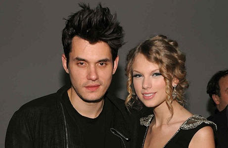

Long were the nights when my days once revolved around you
Counting my footsteps,
Praying the floor won't fall through, again
My mother accused me of losing my mind,
But I swore I was fine, you paint me a blue sky
And go back and turn it to rain
And I lived in your chess game,
But you changed the rules every day
Wondering which version of you I might get on the phone
Tonight, well I stopped picking up, and this song is to let you know why
Dear John, I see it all now that you're gone
Don't you think I was too young to be messed with?

The girl in the dress, cried the whole way home, I should've known
Well maybe it's me and my blind optimism to blame
Maybe it's you and your sick need to give love then take it away
And you'll add my name to your long list of traitors who don't understand
And I'll look back and regret how I ignored when they said "run as fast as you can"
Dear John, I see it all now that you're gone
Don't you think I was too young to be messed with?
The girl in the dress, cried the whole way home
Dear John, I see it all, now it was wrong
Don't you think nineteen is too young
To be played by your dark twisted games, when I loved you so?
I should've known
You are an expert at sorry,
And keeping the lines blurry
Never impressed by me acing your tests
All the girls that you've run dry
Have tired, lifeless eyes
'Cause you burned them out But I took your matches before fire could catch me,
But I took your matches before fire could catch me,
So don't look now, I'm shining like fireworks over your sad, empty town
Dear John, I see it all now that you're gone
Don't you think I was too young to be messed with?
The girl in the dress, cried the whole way home.
I see it all now that you're gone
Don't you think I was too young to be messed with?
The girl in the dress wrote you a song
You should've known, you should've known
Don't you think I was too young? You should've known